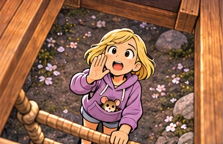
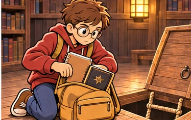
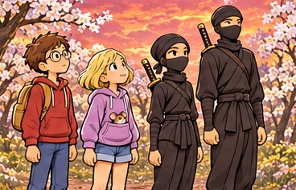
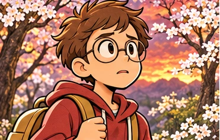
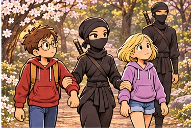
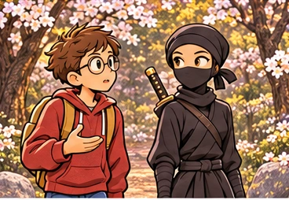
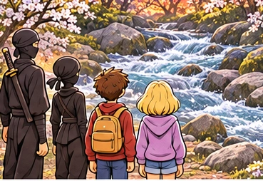
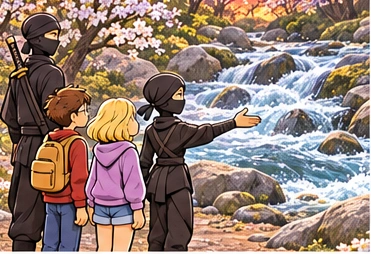

Chapter 4 · Part 2 — Captured
“Come on, Jack!” came Annie’s voice from below.

Jack put his notebook and the ninja book into his pack. He pushed his glasses into place. And he started down the ladder.

Jack joined Annie and the ninjas on the ground.
The sun had fallen behind the hills. The sky was streaked with red and gold.

The mouse peeked out from Annie’s sweatshirt pouch.
“Don’t be scared, Peanut,” Annie whispered. “We’ll take care of you.”
Great, thought Jack. But who is going to take care of us?

The short ninja held Jack’s arm in one hand and Annie’s arm in the other. He led them through the twilight. The tall ninja walked behind them.

“Where are we going?” Jack asked.

The ninjas stopped near the rushing water of the wide stream. The water roared as it raced downhill.

The short ninja looked at Jack and Annie. He let go of their arms. Then he pushed them toward the stream.

“You want us to cross it?” shouted Annie.
The ninja nodded. Then he and the short ninja stepped into the wild stream. They started wading across.
“Let’s run back to the tree house!” said Jack.
“No, we have to follow them!” said Annie. “For Morgan’s sake!”
Jack took a deep breath. She was right.
Annie grabbed Jack’s hand. Together they stepped into the water.
“YIKES!” They both screamed and jumped out.
It was the coldest water Jack had ever felt! It was colder than ice. It was so cold it felt like fire.
“I can’t go back in,” said Annie, shivering.
“Me neither,” said Jack. “I’ll have a heart attack.”
The ninjas looked at Jack and Annie. Then they turned around and came back.
The tall ninja grabbed Jack.
“Help!” Jack cried.
But the ninja lifted Jack high into the air. And put him on his shoulder.
The short ninja put Annie on his shoulder.
Then the two ninjas stepped into the stream again. The icy wild waters swirled around them. It went up to the short ninja’s waist.
But the ninjas moved through the stream as calmly as two sailing ships.